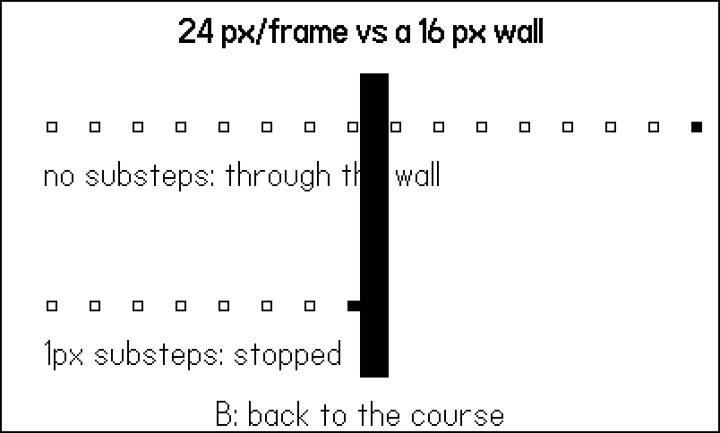
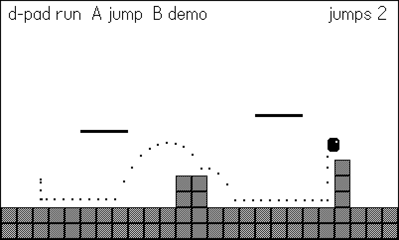
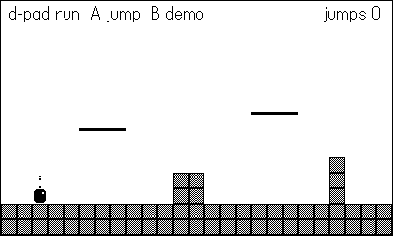

14 Movement, Collision, and Physics
Everything a game does flows through one question, asked thirty times a second: where is everything now? This chapter builds the machinery that answers it — velocity and gravity under a fixed timestep, the axis-aligned bounding box, and movement against a tile grid that cannot tunnel through walls no matter how fast an object goes. The example is a compact tile platformer: a course of solid blocks and one-way platforms, a player with run/jump physics tuned constant by constant, and a built-in demonstration screen where a fast bullet flies straight through a wall so you can watch the bug this chapter exists to prevent.
The techniques here were battle-tested across the tile-engine games (blast, spirit, relic, burrow) and every platformer-shaped project since. None of them uses the SDK sprite system’s moveWithCollisions; they move plain Lua tables against a grid with about sixty lines of physics. Those sixty lines are the heart of this chapter, and by the end you will know why each one is there.
The player in this chapter’s example also draws its own motion: every frame appends the player’s position to a trail, and the trail renders as a dotted arc behind it. That arc is not a debugging afterthought — it is the fastest way to see jump feel, and it produces this chapter’s figures.
14.1 Velocity under a fixed timestep
Chapter 3 fixed our timestep at DT = 1/30. The payoff arrives now: all movement constants can be written in real units — pixels per second, pixels per second squared — and applied with one multiply. Here is the complete constant block for the example’s player:
local RUN_ACC <const> = 900 -- px/s^2 toward max run speed
local FRICTION <const> = 700 -- px/s^2 toward rest, grounded
local MAX_RUN <const> = 130 -- px/s
local JUMP_VEL <const> = -310 -- px/s at takeoff
local GRAV_UP <const> = 780 -- px/s^2 while rising
local GRAV_DOWN <const> = 1500 -- px/s^2 while falling
local APEX_BAND <const> = 40 -- |vy| under this = apex hang
local APEX_GRAV <const> = 430 -- px/s^2 inside the band
local MAX_FALL <const> = 340 -- terminal velocity, px/s
local COYOTE <const> = 4 -- frames of grace off a ledge
local BUFFER <const> = 4 -- frames a press is rememberedRead the units. MAX_RUN = 130 means the player crosses the 400px screen in about three seconds. GRAV_DOWN = 1500 means a fall gains 50px/s of speed every frame. When a constant misbehaves, you can reason about it in physical terms instead of mystery per-frame increments — and because DT never changes, “per second” and “per 30 frames” are the same thing, deterministically.
Horizontal movement is three cases: accelerate left, accelerate right, or (when grounded with no input) apply friction toward rest:
-- horizontal: accelerate toward the held direction;
-- friction pulls toward rest when idle on the ground
if inp.left then
p.vx = math.max(p.vx - RUN_ACC * DT, -MAX_RUN)
elseif inp.right then
p.vx = math.min(p.vx + RUN_ACC * DT, MAX_RUN)
elseif p.grounded then
local f = FRICTION * DT
if p.vx > f then p.vx = p.vx - f
elseif p.vx < -f then p.vx = p.vx + f
else p.vx = 0 end
endTwo details are load-bearing. First, acceleration is clamped inside the math.max/math.min call, so holding a direction can never push past MAX_RUN — there is no separate clamp step to forget. Second, friction is applied only when grounded: in the air, releasing the d-pad keeps your horizontal speed, which is what six decades of platformers have trained hands to expect. Air control comes from the accelerate cases still running mid-air; only the friction case checks p.grounded.
14.2 The AABB: one comparison per edge
The axis-aligned bounding box is the workhorse of 2D collision: a rectangle that never rotates, so overlap is four comparisons. The cleanest statement of it in the shipped games is the fighting game’s hitbox test, which resolves every strike, hurtbox, and throw in Fightin’ Chitin:
-- chitin/source/fight.lua:18
local function rectsOverlap(ax, ay, aw, ah, bx, by, bw, bh)
return ax < bx + bw and bx < ax + aw
and ay < by + bh and by < ay + ah
endThe logic reads as a double negative: two boxes overlap unless one is entirely to the left of the other or entirely above it. Each < pair rules out one separation axis. Note the strict inequalities — two boxes that exactly touch edges do not overlap, which means an actor resting flush against a wall is not “colliding” with it. That convention matters more than it looks: it lets an actor park at the last free pixel beside a wall and test cleanly next frame.
The example stores actors as center-plus-half-extents ({x, y} center, hw/hh half width and height) rather than corner-plus-size. Centers make flipping, drawing, and distance checks simpler; convert to corners only at the moment you test or draw.
rectsOverlap is the right tool for entity versus entity — player against coin, hitbox against hurtbox. For entity versus world, when the world is hundreds of tiles, testing every tile as a box would be absurd. The grid itself gives us something better.
14.3 Moving against a tile grid
A tile map is a collision structure disguised as scenery. Because tiles sit on a regular grid, “which tiles does this box touch?” is integer division, not search:
-- pixel -> tile coordinates (tiles are 1-based)
function Map.tileAt(px, py)
return math.floor(px / Map.TILE) + 1,
math.floor(py / Map.TILE) + 1
end-- Out-of-bounds counts as solid, so the map edge is a wall and
-- nothing needs a special "did I leave the world" check.
function Map.solid(tx, ty)
if tx < 1 or tx > Map.W or ty < 1 or ty > Map.H then
return true
end
return grid[ty][tx] == 1
end
function Map.oneWay(tx, ty)
if tx < 1 or tx > Map.W or ty < 1 or ty > Map.H then
return false
end
return grid[ty][tx] == 2
endTreating out-of-bounds as solid is a small trick with outsized value: the map edge becomes an invisible wall and no actor ever needs a “did I leave the world?” check.
Now the key query: is a box, placed at a candidate position, overlapping any solid tile? Convert the box’s corners to tile coordinates and scan the (tiny) rectangle of tiles between them:
-- is the box at (x, y) overlapping any solid tile?
function Phys.blocked(x, y, hw, hh)
local tx0, ty0 = Map.tileAt(x - hw, y - hh)
local tx1, ty1 = Map.tileAt(x + hw - 0.01, y + hh - 0.01)
for ty = ty0, ty1 do
for tx = tx0, tx1 do
if Map.solid(tx, ty) then return true end
end
end
return false
endThe - 0.01 on the far corner deserves a pause. A 12px-wide box centered at x = 8 spans pixels 2 through 13.99…, all inside tile 1. Without the epsilon, a box whose right edge lands exactly on a tile boundary would report itself inside the next tile — one it touches but does not occupy — and actors would snag on walls they are merely flush against. For a 12×14 player the double loop tests at most four tiles. That is the whole cost of world collision.
The tile engine that shipped four games keeps blocked almost identical to the version above, with one addition — the definition of “solid” is a parameter:
-- tiles/core/tphys.lua:19
function Phys.blocked(x, y, hw, hh, isSolid)
isSolid = isSolid or defaultSolid
local tx0, ty0 = Map.tileAt(x - hw, y - hh)
local tx1, ty1 = Map.tileAt(x + hw - 0.01, y + hh - 0.01)
for ty = ty0, ty1 do
for tx = tx0, tx1 do
if isSolid(tx, ty) then return true end
end
end
return false
endblast (a Bomberman) passes an isSolid that also counts bombs — except the bomb the player is currently standing on, so you can walk off what you just dropped. burrow (a Boulder Dash) passes one that counts settled boulders. The physics never changed; the question did. When your game grows entities that sometimes block movement, resist the urge to fork the physics — parameterize the solidity test.
14.4 Why fast objects skip walls — and the 1px substep
Here is the bug every collision system must answer. Movement is discrete: an actor is at x this frame and x + vx*DT the next, and it occupies no position in between. If vx*DT is larger than a wall is thick, the two positions can straddle the wall — the actor never occupies an overlapping position, every overlap test honestly reports “no collision,” and the actor sails through solid rock. This is called tunneling, and it is not a rare edge case: a bullet at 720px/s moves 24px per frame, wider than a 16px tile.
Worse, tunneling is intermittent — the nastiest kind of bug. Whether the two positions straddle the wall depends on where the frame’s fractional travel happens to land, so the same bullet fired from a slightly different x passes through or collides, apparently at random. A collision system that fails one time in five will pass a casual playtest and then eat a player’s best run. The demo screen is rigged accordingly: the naive bullet starts at x=28 so its positions land on 196 and then 220, bracketing the wall at 200–215 perfectly, every time. Change its starting x by a few pixels in demo.lua and it will sometimes hit — which is the point; “sometimes” is not a collision system.
The example ships a demonstration you can watch (Figure 14.1). Press B and two identical bullets fly at a one-tile-thin wall. The top bullet integrates naively; the bottom one uses substeps:
function Demo.update()
local dx = SPEED * DT
-- naive: one 24px teleport per frame. The bullet occupies
-- x=196 one frame and x=220 the next; no position it ever
-- OCCUPIES overlaps the wall, so the overlap test never
-- fires and the bullet sails through 16px of "solid".
if naive.x < 380 then
naive.trail[#naive.trail + 1] = naive.x
-- it even tests its destination -- but 196 jumps to
-- 220, and neither box touches the wall at 200..215
if not hitsWall(naive.x + dx, naive.hw) then
naive.x = naive.x + dx
end
end
-- substepped: at most 1px per test, so every pixel of the
-- travel is checked and the wall cannot be skipped
sub.trail[#sub.trail + 1] = sub.x
local rem = dx
while rem > 0 and sub.x < 380 do
local step = math.min(1, rem)
if hitsWall(sub.x + step, sub.hw) then break end
sub.x = sub.x + step
rem = rem - step
end
end
The fix the shipped games settled on is the crudest one that is also completely reliable: never move more than one pixel per collision test. Split the frame’s displacement into 1px substeps, test before each, and stop at the first blocked step:
-- Axis-separated move in 1px substeps. Mutates a.x/a.y and
-- returns hitX, hitY. Substeps mean a fast actor can never skip
-- a tile: it advances at most one pixel per collision test.
-- `dropping` disables one-way platforms (drop-through).
function Phys.move(a, dx, dy, dropping)
local hitX, hitY = false, false
local sx, rem = sign(dx), math.abs(dx)
while rem > 0 do
local step = math.min(1, rem)
if Phys.blocked(a.x + sx * step, a.y, a.hw, a.hh) then
hitX = true
break
end
a.x = a.x + sx * step
rem = rem - step
end
local sy = sign(dy)
rem = math.abs(dy)
while rem > 0 do
local step = math.min(1, rem)
local hit = Phys.blocked(a.x, a.y + sy * step, a.hw, a.hh)
if not hit and sy > 0 and not dropping then
hit = landsOnPlatform(a.x, a.y, a.hw, a.hh, step)
end
if hit then
hitY = true
break
end
a.y = a.y + sy * step
rem = rem - step
end
return hitX, hitY
endWhy does this kill tunneling stone dead? Because a wall is at least one pixel thick, and the actor now tests every pixel of its path. There is no gap between consecutive tested positions for a wall to hide in. The actor also stops flush against the wall — at the last free pixel — rather than embedded in it or a full frame’s travel short of it, which is exactly the resting contact the strict-inequality AABB convention wants.
Notice the movement is axis-separated: all of dx resolves, then all of dy. Diagonal movement into a corner becomes “slide along the wall” for free, because the blocked axis stops while the open axis keeps going. Every tile game in the catalog moves this way; sweeping along the true velocity vector buys almost nothing on a grid and costs you that free wall-slide.
Two quieter details of the loop reward attention. First, the final substep is fractional: math.min(1, rem) lets a frame’s leftover 0.33px of travel apply, so positions are floats and slow actors (anything under 30px/s) still creep rather than sticking. Never round positions in the physics — round (implicitly, by drawing) at render time only, or sub-pixel velocities vanish. Second, the loop is why MAX_FALL exists in the constants block: terminal velocity is usually sold as realism, but its practical job is bounding the substep count and keeping a long fall readable. An uncapped fall after a three-second drop would move 4,500px/s — 150 substeps and an unfollowable blur. The cap says: past this speed, extra velocity adds cost and subtracts legibility.
The tiles engine adds one refinement on top of Phys.move worth knowing about: Phys.moveAssist (tiles/core/tphys.lua:63), the classic Game Boy Zelda / Bomberman corner assist. When an actor is blocked on its movement axis but its center is within half a tile of an open corridor, moveAssist nudges it perpendicular — capped at the actor’s own speed — so it slides around the corner instead of grinding against it. Top-down games with tile-sized doorways feel broken without it (players clip corners constantly and read every snag as bad controls); a gravity platformer like this chapter’s example doesn’t need it, because jumping is the corner assist. If you build top-down, steal it.
The loop looks expensive and is not. A player at top speed moves 4–5 px per frame — five substeps, each testing at most four tiles: at worst forty table lookups. Even the demo’s 24px/frame bullet is 24 cheap tests. The per-second constants and fixed DT bound your maximum displacement, so the substep count is bounded too. If you ever need projectiles at hundreds of pixels per frame, switch those (and only those) to a raycast; for everything that has a body, 1px substeps are the answer that shipped sixty games.
14.5 One-way platforms
Platforms you can jump up through and stand on are a solidity rule, not a new physics system: a one-way tile is solid only when the actor’s feet cross its top edge moving downward. From below or from the side it is air. Substeps make the crossing test almost trivial — each step moves at most 1px, so “did my feet enter a new tile row this step?” is a two-floor comparison:
-- Moving down by `step`: do the actor's feet cross the top edge
-- of a one-way platform tile this substep? Only then does the
-- platform act solid -- from below or from the side it is air.
local function landsOnPlatform(x, y, hw, hh, step)
local t = Map.TILE
local feet = y + hh
local rowOld = math.floor((feet - 0.01) / t)
local rowNew = math.floor((feet + step - 0.01) / t)
if rowNew == rowOld then return false end
local ty = rowNew + 1
local tx0 = math.floor((x - hw) / t) + 1
local tx1 = math.floor((x + hw - 0.01) / t) + 1
for tx = tx0, tx1 do
if Map.oneWay(tx, ty) then return true end
end
return false
endThe vertical half of Phys.move calls this only when moving down (sy > 0) and only when not deliberately dropping. Dropping through is the standard down-plus-jump chord; the player sets an 8-frame drop window during which the platform check is skipped, long enough for its feet to clear the tile before the platform turns solid again.
blocked
The tempting shortcut — making Map.solid return true for one-way tiles when the actor is above them — poisons every other query. blocked is used for horizontal movement, for spawn checks, for standing probes; a one-way tile must answer differently depending on direction of travel, which only the vertical move loop knows. Keep the crossing test where the crossing happens.
14.6 Jump feel: gravity is a design constant
A jump is one line — p.vy = JUMP_VEL — and then feel is everything that happens on the way down. Real projectiles trace symmetric parabolas; games that feel good do not. The example uses three gravities:
-- asymmetric gravity: floaty rise, heavy fall, and a low-
-- gravity band around the apex so the peak hangs a moment
local g = GRAV_DOWN
if p.vy < 0 then g = GRAV_UP end
if not p.grounded and math.abs(p.vy) < APEX_BAND then
g = APEX_GRAV
end
p.vy = math.min(p.vy + g * DT, MAX_FALL)GRAV_UP = 780 on the way up and GRAV_DOWN = 1500 on the way down makes the descent almost twice as urgent as the rise — floaty going up, snappy coming down, and the player spends less time in the helpless falling state. The third gravity, APEX_GRAV, kicks in when vertical speed is nearly zero: the top of the jump hangs for a few extra frames, which is where players steer, aim, and feel clever. None of this is physically honest and all of it is standard practice; the constant block at the top of the chapter is a feel-tuning panel, not a physics textbook.
Don’t tune those constants by feel alone — derive them from the two numbers you actually care about, jump height and time to apex. For a rise of h pixels reaching its peak in t seconds:
GRAV_UP = 2 * h / t^2
JUMP_VEL = -2 * h / tThe example’s -310 and 780 come from wanting roughly 60px of rise (comfortably over the course’s three-tile pillar, with margin) in about 0.4 seconds. Design in tiles-cleared and seconds, then compute; when a level later needs a four-tile jump, you change h and re-derive instead of nudging magic numbers until Tuesday.
You can read the result directly off the player’s trail (Figure 14.2): dots cluster at the apex (slow means close together), spread going down (fast means far apart), and the descent is visibly steeper than the rise.

After moving, the player converts collision results back into state:
local hitX, hitY = Phys.move(p.a, p.vx * DT, p.vy * DT,
p.drop > 0)
if hitX then p.vx = 0 end
if hitY then
if p.vy > 0 then p.grounded = true end
p.vy = 0 -- landed, or bonked a ceiling
elseif p.vy ~= 0 then
p.grounded = false -- walked off a ledge, or airborne
endA downward hit lands (grounded, vy = 0); an upward hit bonks a ceiling (vy = 0, keep falling next frame). Standing still is the subtle case: gravity accelerates the player into the floor every frame, the 1px substep is immediately blocked, and hitY re-confirms grounded — so “am I on the ground?” never needs a separate probe.
The trail itself is four lines and worth stealing for any movement work:
-- record the arc: one dot per frame, oldest dropped
p.trail[#p.trail + 1] = { p.a.x, p.a.y }
if #p.trail > TRAIL then table.remove(p.trail, 1) end14.7 Coyote time and jump buffering
Two forgiveness windows separate a jump that works from one that feels fair. Coyote time: for a few frames after walking off a ledge, a jump still fires — players press jump at the edge pixel and, thanks to reaction time, are usually one frame late. Jump buffering: a jump pressed a few frames before landing is remembered and fires on touchdown — players time the landing, not the frame after it. Both are counters, refreshed on one side and spent on the other:
-- coyote frames refill while grounded; a jump press is
-- buffered so a slightly-early press still fires on landing
if p.grounded then p.coyote = COYOTE
elseif p.coyote > 0 then p.coyote = p.coyote - 1 end
if inp.jump then p.buffer = BUFFER
elseif p.buffer > 0 then p.buffer = p.buffer - 1 end
if inp.jump and inp.down and p.grounded
and Phys.onOneWay(p.a) then
p.drop = 8 -- fall through the platform
p.grounded = false
p.buffer = 0
elseif p.buffer > 0 and p.coyote > 0 then
p.vy = JUMP_VEL
p.buffer, p.coyote = 0, 0
p.grounded = false
Harness.count("jumps")
end
if p.drop > 0 then p.drop = p.drop - 1 endThe jump condition is then simply buffer > 0 and coyote > 0 — “a recent press” meets “recent ground.” Both constants are 4 frames (133ms). Push them past 6–7 and players start noticing jumps from thin air; Chapter 9 covered the same buffering idea at the input layer, and here you see where it cashes out.
14.8 The course, the seam, and the bot
The example’s course is built in code — two ground rows, a step, two one-way platforms, a pillar — and pre-rendered once into a 400×240 image. The map never changes, so repainting 375 tiles a frame is pure waste:
-- Draw the whole map into one image at load time; each frame
-- just blits it. Repainting 375 tiles per frame would burn the
-- budget for nothing -- the map never changes.
function Map.prerender()
img = gfx.image.new(400, 240, gfx.kColorWhite)
gfx.pushContext(img)
local t = Map.TILE
for y = 1, Map.H do
for x = 1, Map.W do
local px, py = (x - 1) * t, (y - 1) * t
if grid[y][x] == 1 then
gfx.setDitherPattern(0.5,
gfx.image.kDitherTypeBayer4x4)
gfx.fillRect(px, py, t, t)
gfx.setColor(gfx.kColorBlack)
gfx.drawRect(px, py, t, t)
elseif grid[y][x] == 2 then
gfx.setColor(gfx.kColorBlack)
gfx.fillRect(px, py + 2, t, 3)
end
end
end
gfx.popContext()
end
function Map.draw()
img:draw(0, 0)
end
Input flows through the single-seam pattern from Chapter 9 — the harness bot is consulted first, and a human’s buttons fill in otherwise:
local function gather(frame)
local bot = Harness.input(frame)
if bot then return bot end
local held = playdate.buttonIsPressed
return {
left = held(playdate.kButtonLeft),
right = held(playdate.kButtonRight),
down = held(playdate.kButtonDown),
jump = playdate.buttonJustPressed(playdate.kButtonA),
demo = playdate.buttonJustPressed(playdate.kButtonB),
}
endThe figure script runs right and presses jump on three scheduled frames. Nothing about the course requires precision: there are no pits, and every obstacle can be cleared from a standstill, so a mistimed scripted jump degrades the figure, never the run. Building bot-forgiving levels for your test scripts is cheaper than building frame-perfect bots — the autopilot discussion in Chapter 16 and the harness chapter (Chapter 18) return to this.
14.9 What you know now
- Movement constants live in per-second units and get one
* DTon the way in; the fixed timestep makes them deterministic. - AABB overlap is four strict comparisons (
chitin’srectsOverlap); use it entity-vs-entity, and use the grid itself for entity-vs-world. Phys.blockedturns box-vs-world into at most four tile lookups — mind the- 0.01edge epsilon, and parameterize solidity when entities start blocking movement.- Tunneling happens because discrete movement occupies no positions between frames; 1px substeps test every pixel of travel, stop actors flush against walls, and cost almost nothing at gameplay speeds.
- Axis-separated movement gives wall-sliding for free.
- One-way platforms are a directional solidity rule in the vertical move loop, not a map property.
- Jump feel is asymmetric gravity (light up, heavy down, lighter still at the apex) plus two 4-frame forgiveness counters: coyote time and jump buffering.
- This physics is not a toy: it is
tiles/core/tphys.lua, four shipped games deep. Chapter 22 reads it in full, including the variants those games needed — a walkable bomb, a falling boulder.
The player now moves beautifully — and silently, in a world with no consequences. Chapter 15 adds the thump: timers, animators, screen shake, and the rest of game feel.